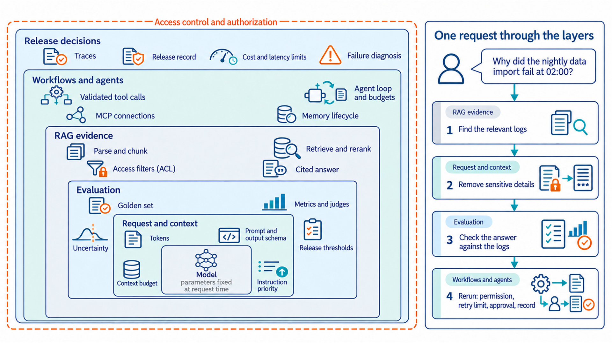
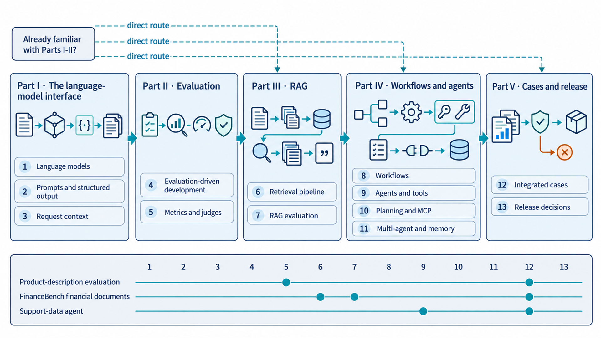

How an AI model becomes an AI product
A language model becomes a product when surrounding software supplies information, tests answers, controls actions, and records evidence for release decisions.
An engineer asks an AI assistant: “Why did the nightly data import fail at 02:00?”
The answer depends on the job settings and error logs. A large language model (LLM) needs that information in its request to explain what happened. Additional software must find the relevant records, remove sensitive details, and check whether the response is supported by the logs. If the engineer asks the assistant to rerun the import, the software must also check permissions, limit repeated attempts, obtain any required approval, and record what it did.
This book explains the software and processes required to make language models a useful product.
The book follows evaluation-driven development, which tests each change to the product against stated requirements before release and checks it again on live traffic. Chapter 4 defines the method. The method is aligned with the NIST AI Risk Management Framework and its Generative AI Profile, and with ISO/IEC standards for AI risk management, life-cycle processes, system quality, and requirements engineering. The framework alignment section below maps each step of the method to them and states the limits of that mapping.
The examples assume familiarity with basic Python, including functions, variables, and simple data structures. Model training and the mathematics of language generation are introduced where they are needed. No prior knowledge of a particular model provider or agent framework is required.
From model requests to release decisions
The five Parts follow one development path. Part I explains what enters and leaves a model request. Part II develops ways to measure answer quality. Part III supplies information from external sources. Part IV adds workflows and tools that the software controls. Part V brings these methods together in complete cases and decisions about release.
The capabilities introduced across these Parts build on one another. An external document can support an answer only after the application selects relevant content and includes it in the request. A proposed tool call can affect another system only after the application validates and executes it. The map below shows how the model fits within the software that supplies information, checks results, and controls actions.
An access-control list (ACL) names the users or roles allowed to access a resource. The surrounding software must apply it before adding private information to a model request.

The side panel follows the engineer’s question from the opening. Finding the relevant logs uses retrieved evidence, and removing sensitive details happens while the request is assembled. Checking the answer against the logs is evaluation. A rerun passes through permission, retry, approval, and recording controls.
Learning path
The chapter order starts with request handling and evaluation because later methods build on them. The learning path also shows direct routes to retrieval, workflows and agents, and the integrated cases when those foundations are already familiar, with links back to earlier explanations when needed.

Each Part panel lists its chapters and their main methods. The bottom band shows where three worked examples recur across chapters: evaluating generated product descriptions, answering questions from financial documents with the FinanceBench dataset, and a data agent that analyzes a dataset of customer-support requests.
Scope limits
The focus is software that uses language models, including how to test its answers and control its actions. Related subjects receive only the background needed here:
- Model training: The book introduces training and alignment to explain model behavior. It does not cover training a foundation model or distributing that work across a computing cluster.
- Cloud infrastructure: The examples do not provide a guide to creating clusters, networks, or cloud environments.
- Deployment and monitoring platforms: The book covers evaluation, execution records, release decisions, and methods for validating a release in production, but not the setup of deployment or monitoring platforms.
Framework alignment
Each step of the method produces evidence: requirements, evaluation records, traces, and release decisions. The table maps these steps to the NIST AI Risk Management Framework (AI RMF 1.0)1 and its Generative AI Profile (NIST AI 600-1)2, and to five ISO/IEC standards: AI risk management (23894)3, AI system life-cycle processes (5338)4, AI system quality (25059), requirements engineering (29148), and AI management systems (42001)5. Section 4.1 cites 25059 and 29148.
| Book step | Sections | NIST AI RMF 1.0 | NIST AI 600-1 risk | ISO/IEC standard |
|---|---|---|---|---|
| Product requirements, risk tolerance, and error costs | 4.1 | MAP 1.4, 1.5, 1.6, 3.2 | - | 29148, 25059 |
| Task scope, output specification, and non-goals | 2.1, 2.4, 13.3 | MAP 3.3 | - | 29148 |
| Evaluation criteria, golden set, and slices | 4.2, 4.3 | MAP 2.3; MEASURE 1.1, 2.3 | - | 25059 |
| Baselines, run records, and test documentation | 4.4, 4.5, Appendix A | MEASURE 2.1 | - | 5338 |
| Uncertainty, release thresholds, and failure slices | 4.6, 5.6 | MEASURE 2.5; MANAGE 1.1 | - | 5338 |
| Metrics, judge models, and human review | 5.1 to 5.5 | MEASURE 1.3, 2.13 | - | 25059 |
| Grounded answers and evidence checks | 6.7, 7.1 to 7.4 | MEASURE 2.5, 2.9 | Confabulation | 25059 |
| Instruction priority, prompt injection, and tool authorization | 3.5, 9.2, 10.6 | MEASURE 2.7 | Information security | 23894 |
| Validators and human approval | 8.7 | MAP 3.5 | Human-AI configuration | 23894 |
| Access filters and memory deletion | 6.6, 11.3, 11.5 | MEASURE 2.10 | Data privacy | 23894 |
| Traces and the release decision record | 12.3, 12.5, 13.3 | MEASURE 2.8; MANAGE 1.1, 1.3 | - | 23894, 5338 |
| Validation after release | 13.4 | MEASURE 2.4, 3.1, 3.3; MANAGE 2.4, 4.1, 4.3 | - | 5338 |
| Organizational governance | Not covered | GOVERN function | - | 42001 |
NIST subcategories are cited by their identifiers in AI RMF 1.0. Risk names in the Generative AI Profile column follow NIST AI 600-1. The ISO/IEC standards are mapped by their published scope, because their full texts define clauses this book does not reproduce.
The mapping identifies engineering records relevant to the listed outcomes and topics. It does not certify conformance with any framework or standard.
The GOVERN function of the AI RMF and the management-system requirements of ISO/IEC 42001 apply to an organization’s policies, roles, and processes. This book covers the system-level evidence those processes use, not the processes themselves.
NIST and ISO revise these documents. Check the current versions before relying on a subcategory or clause.
Reference material and appendices
Five appendices, a Glossary, and a References section support the thirteen chapters:
- Execution records: Appendix A shows which records help explain a system’s behavior.
- Formulas: Appendix B summarizes formulas and their uses.
- Libraries and interfaces: Appendix C separates what libraries provide from what the surrounding software must handle.
- Practice and answers: Appendix D poses design and diagnosis questions. Appendix E explains the main reasoning needed to answer them.
- Terms and research: The Glossary collects key definitions, and the References section lists papers and dated documentation.
Tabassi, E. (2023). Artificial Intelligence Risk Management Framework (AI RMF 1.0) (NIST AI 100-1). National Institute of Standards and Technology. https://doi.org/10.6028/NIST.AI.100-1. The framework organizes outcomes under the GOVERN, MAP, MEASURE, and MANAGE functions and is intended for voluntary use.↩︎
National Institute of Standards and Technology. (2024). Artificial Intelligence Risk Management Framework: Generative Artificial Intelligence Profile (NIST AI 600-1). U.S. Department of Commerce. https://doi.org/10.6028/NIST.AI.600-1. The profile names risks specific to generative AI, including confabulation, data privacy, human-AI configuration, and information security, where it discusses prompt injection.↩︎
International Organization for Standardization & International Electrotechnical Commission. (2023). Information technology: Artificial intelligence: Guidance on risk management (ISO/IEC 23894:2023). https://www.iso.org/standard/77304.html. The standard gives guidance on managing risk specific to AI for organizations that develop, deploy, or use AI.↩︎
International Organization for Standardization & International Electrotechnical Commission. (2023). Information technology: Artificial intelligence: AI system life cycle processes (ISO/IEC 5338:2023). https://www.iso.org/standard/81118.html. The standard defines life-cycle processes for AI systems based on ISO/IEC/IEEE 15288 and 12207.↩︎
International Organization for Standardization & International Electrotechnical Commission. (2023). Information technology: Artificial intelligence: Management system (ISO/IEC 42001:2023). https://www.iso.org/standard/81230.html. The standard specifies requirements for establishing, maintaining, and improving an AI management system in an organization.↩︎